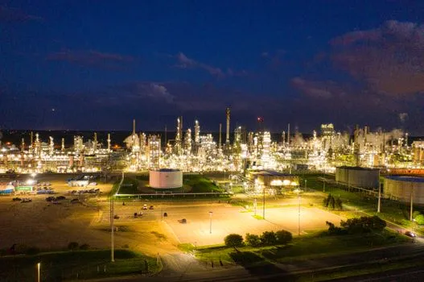
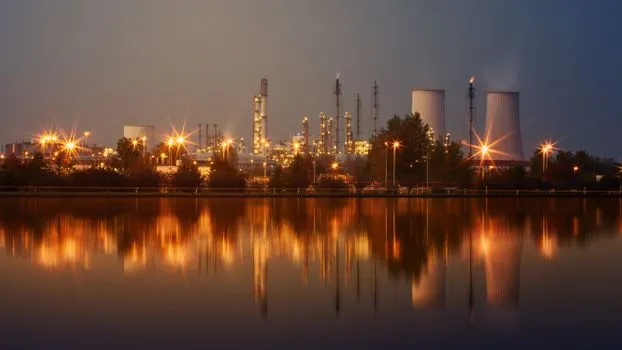
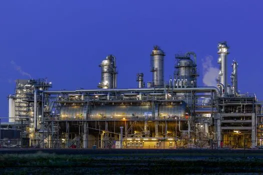
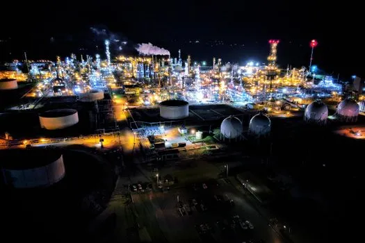

10396415A stunning aerial shot of an illuminated oil refinery at night showcasing industrial production in Rosemount, MN.

10396415A stunning aerial shot of an illuminated oil refinery at night showcasing industrial production in Rosemount, MN.

3105242Industrial plant with reflection in water at twilight, showing smoke stacks and lights.

32399139A striking view of an industrial facility in Zuid-Holland, illuminated at dusk against a clear blue sky.

12641124Stunning aerial view of a brightly lit refinery in El Dorado, Kansas showcasing industrial architecture.